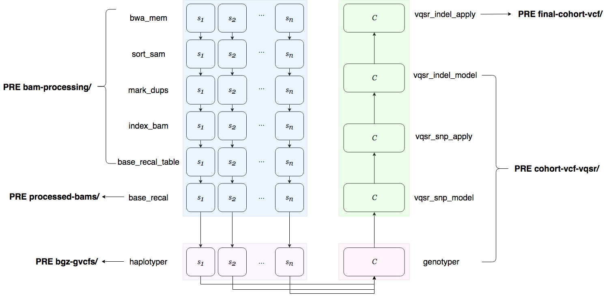

Running the Pipeline and its Outputs¶
Starting a Run¶
Once run.yaml has been properly filled out, the pipeline can be
launched (with an internet connection) with the following command:
(psy-ngs) $ cd path/to/this/repo/
(psy-ngs) $ python rkstr8_driver.py -p <pipeline-name> [ -a access_key_id ] [ -s secret_access_key ]
pipeline-namecan be either germline_wgs, or validation, to indicate- whether or not the user wishes to run validation on GCP with Hail.
access_key_idandsecret_access_keyare the access_key_id and- secret_access_key key pair associated with the user’s AWS account.
The pipeline initialization takes approximately 5 minutes. Afterwards, since the pipeline is serverless, the user can close their laptop (or similarily shut down their computer), and the pipeline will continue to run on AWS.
Pipeline Output¶
For a given pipeline run, the user would have specified the OUTPUT field in
the run.yaml file. All of the intermediate files and the final results of
the pipeline will be uploaded under the OUTPUT uri in the following scheme
if, for example, OUTPUT was set to s3://analysis/results/:
aws s3 ls s3://analysis/results/
PRE bam-processing/
PRE bgz-gvcfs/
PRE cohort-vcf-vqsr/
PRE final-cohort-vcf/
PRE logs/
PRE processed-bams/
The figure below illustrates what files are written under which of the above prefixes.
The logs/ prefix contains the logs for all of the pipeline steps.